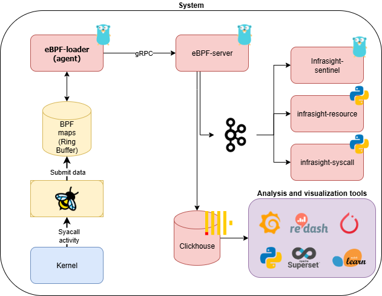

Architecture
🗺️ Architecture Diagram
The diagram below illustrates the high-level architecture of the InfraSight platform:

InfraSight is designed to provide detailed monitoring and auditing of Linux systems (both standalone and within Kubernetes clusters) by collecting low-level system events using eBPF. It operates through a modular pipeline that integrates multiple components for high-performance data collection, enrichment, and storage:
1. eBPF Agents
At the core of InfraSight are eBPF Agents, which are lightweight, kernel-level agents running on each monitored node. These agents use eBPF programs attached to various tracepoints and kprobes to capture critical system call events such as:
execve: Monitoring process execution (command launches).open: Tracking file access and modification.chmod: Observing file permission changes.connectandaccept: Monitoring network connection and acceptance events.ptrace→ Detecting process tracing operations (debuggers, tampering, reverse engineering).mmap→ Tracking memory mapping activity, including suspicious RWX mappings.mountandumount→ Monitoring filesystem mount/unmount activity, often linked to container isolation or tampering.Resource→ Measuring process resource usage (CPU time, memory allocations, I/O, page faults, and process lifecycle events).SyscallFreq→ Aggregating syscall invocation counts per process, useful for anomaly detection based on unusual syscall usage patterns.
These eBPF programs operate directly within the Linux kernel, providing efficient and real-time event tracing with minimal overhead. The eBPF Agents collect raw data, including process information, network events, and file system interactions.
2. InfraSight Server
The InfraSight Server serves as the central processing unit, receiving the raw events from the eBPF Agents. Upon receiving the data, the server performs additional enrichment, such as:
- Converting latency from nanoseconds to more understandable units such as milliseconds or seconds.
- Further converting event data (e.g., converting network protocol identifiers, if necessary).
- Formatting timestamps to ISO8601 for easier readability.
Once enriched, the data is stored in a high-performance, scalable database.
3. Kafka Message Bus
Apache Kafka acts as the event distribution backbone of InfraSight. By publishing enriched eBPF events into Kafka, the platform allows multiple consumers to subscribe and process the data independently. This decouples data collection from detection and analysis, enabling scalability and modularity.
4. Detection & Analytics Components
InfraSight provides multiple detection layers consuming data from Kafka:
🔹 InfraSight Sentinel (Rules Engine)
The InfraSight Sentinel is the rules engine that evaluates eBPF events in real time. Its goal is to detect suspicious behaviors such as fileless execution, privilege escalation, or unusual system activity.
It is responsible for:
- Consuming events from Kafka produced by the InfraSight server.
- Applying security rules (based on syscalls and enriched process/container context).
- Generating structured alerts with detailed process, container, and user information.
- Integrating seamlessly with the rest of the InfraSight ecosystem.
🔹 Anomaly Detection (ML Models)
InfraSight also includes machine learning–based anomaly detection modules:
infrasight-resource→ Focuses on detecting anomalies in resource usage patterns (CPU, memory, faults, etc).infrasight-syscall→ Detects anomalies in syscall frequency and behavior, identifying deviations from learned baselines.
These models consume Kafka events, apply per-container and global anomaly detection, and produce alerts or insights. They complement Sentinel by identifying subtle or previously unknown threats.
5. ClickHouse Database
InfraSight uses ClickHouse, a columnar database optimized for fast analytical queries, as the backend to store and manage the collected events. ClickHouse allows efficient querying even with large volumes of data, which is essential for event-driven telemetry systems.
Data stored in ClickHouse includes system call events, enriched metadata, and timestamped information that can be queried and analyzed in real-time.
5. Data Analysis and Visualization
The final step of the pipeline involves visualizing and analyzing the collected events. InfraSight supports integration with Grafana (or similar tools) to build customizable dashboards. Users can query and analyze the data stored in ClickHouse to extract valuable insights, such as:
- Security audit logs: Understanding access to sensitive files or network connections.
- Performance monitoring: Tracking resource usage by processes, network, and file system.
- Anomaly detection: Identifying unusual patterns of behavior based on syscall events.
6. Flexibility in Deployment
This architecture is designed to work both in standalone Linux environments and in Kubernetes clusters. The modularity allows easy deployment:
- On Kubernetes: The controller (
infrasight-controller) can be used to deploy eBPF agents (as DaemonSets), manage their configuration, and collect telemetry from all nodes in the cluster. - On standalone Linux hosts: The eBPF agents can run on any Linux-based system, providing valuable insights in non-Kubernetes environments.